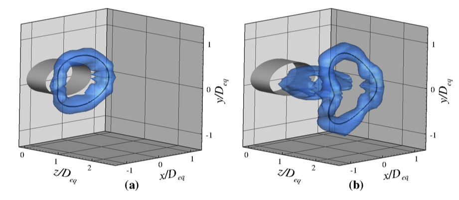

Formation of non-axisymmetric vortex rings
Vortex rings are a common feature in natural flows. In some cases, these vortex rings are circular or very nearly so, but most of the vortex rings that we find in nature are not axisymmetric. For the case of cirluar vortex rings, it is known that there is a physical limit to the size of a vortex ring beyond which it rejects further vorticity flux, and atrailing jet forms behind it. This transition, termed `vortex pinch-off', is predicted by an energy-maximization argument due to Kelvin and Benjamin. However, the Kelvin-Benjamin principle does not apply to non-axisymmetric flows, and the dynamics of the formation of non-axisymmetric vortex rings remain largely unknown. We consider the formation of vortex rings from elliptical nozzles, and compare it to that of axisymmetric vortex rings. By performing PIV on several planes along the perimeter of the elliptical nozzle, we study the effect of varying curvature on vortex formation. We consider the formation of vortex rings from non-axisymmetric nozzles of different shapes, and compare their dynamics to those of circular vortex rings.
